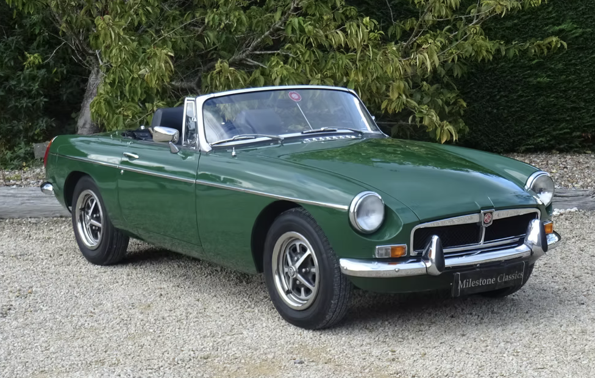
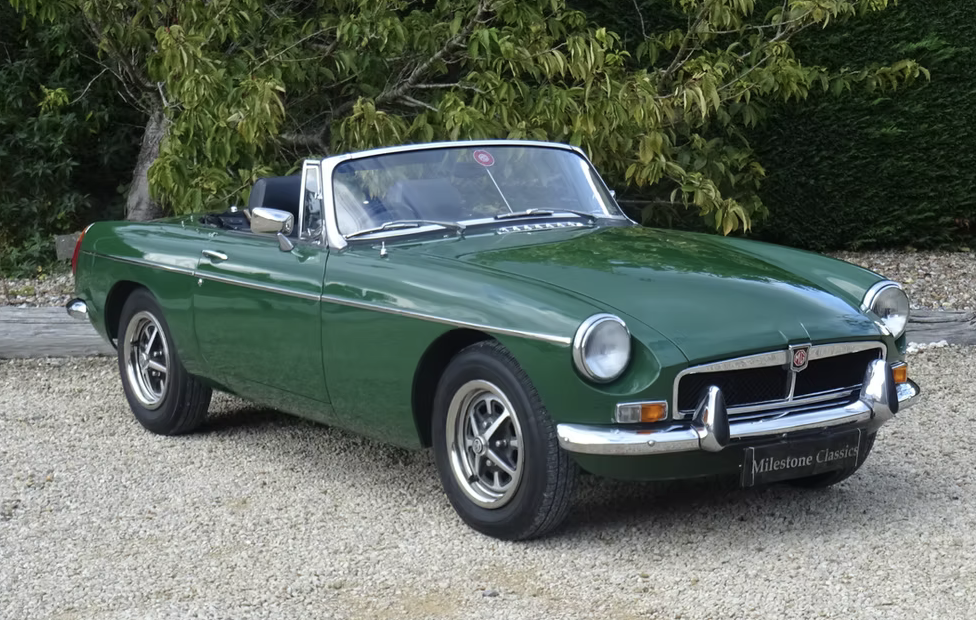

I spent an interesting ten and a half years getting to know an MG TC. I enjoyed learning how it worked, doing jobs on it, finding out about its history and, most of all, driving it. The journey that I went on can be viewed by clicking on the TC's photo, probably my favourite one, taken by the son of a neighbour. He was not only interested in cars, but was also an accomplished photographer.
Then the time came to pass on the TC to someone who would look after it, improve it and enjoy it. But the space in the garage just had to be filled and thus an MGB arrived. Click on the B's photo to find out how a new journey evolved.
 
